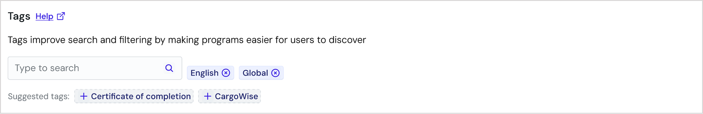
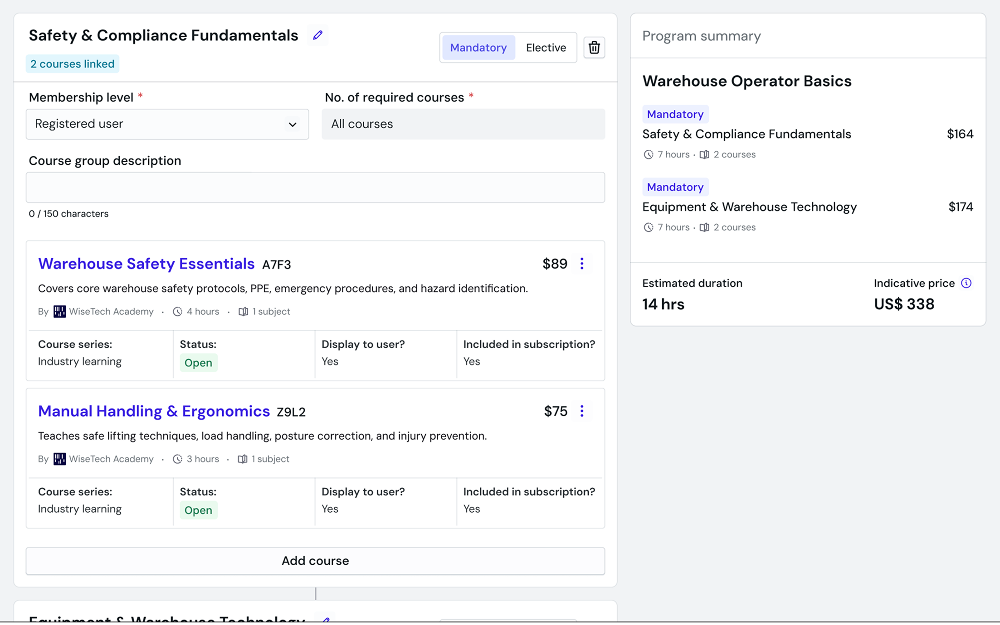
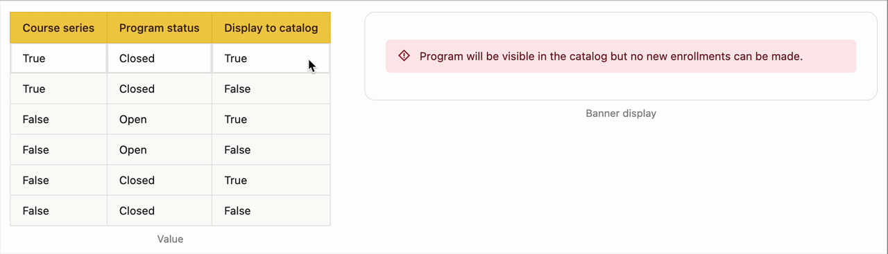
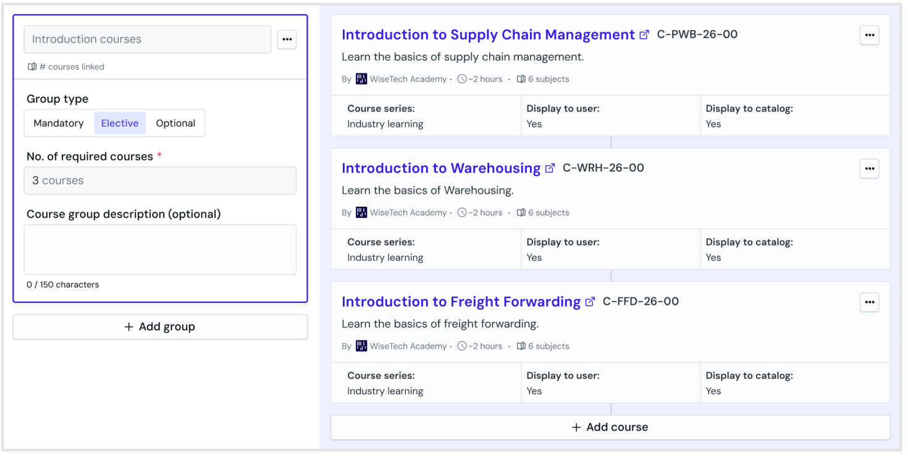

Enabling self-serve and scalable program creation.
Program setup took up to 3 weeks and required a developer to hard-code every configuration and change.
I led design end-to-end as the sole designer, from research through handoff. The result was a self-serve creation interface that removed the developer dependency entirely and informed interaction patterns for long, complex forms across WiseTech Academy.
- The process of creating a program took around 3 weeks:
- Filling in a 3-tab spreadsheet → prioritisation by the product team → hardcoding by developers → SME review → then finally publishing.
- Product support and development team absorbing the overhead throughout the process.
- Expected enterprise client growth made the current process unscalable.
We spoke to 11 users across 3 teams to understand their existing workflow. A key theme quickly emerged.
The spreadsheet for program configuration had been designed around the codebase, not around the people using it.
- The spreadsheet fields were named after codebase variables, not natural language.
- Every edit carried 3-week risk because no low-stakes way to make a change.
- That risk made admins over-reliant on support rather than acting independently.
I planned and conducted 2 rounds of usability testing via Figma Make prototypes of our initial concept with 8 stakeholders from 3 different teams.
The 3 core flows tested were:
- Program set up
- Adding and editing courses
- Advanced customisations
Progressive disclosure keeps admins focused, not overwhelmed.
Grouping settings by relevance and surfacing them in stages meant admins could work through configuration without confronting the full complexity of the form at once. Plain language replaced technical labels wherever possible.
Autocomplete and defaults reduce repetitive input on an already long form.
Most inputs were consistent within the same organisation or domain, so pre-filling where possible reduced the effort required without removing control.

The 'shopping cart' pattern gives admins a live view of cost, duration, and structure as they build.
Users expressed confusion over how course groups and courses related to each other in the existing spreadsheet. Admins can see the shape and cost of a program without having to mentally reconstruct it from a flat list.

I planned and conducted 2 rounds of usability testing via prototypes of our initial concept with 8 stakeholders, spanning across Product, e-Learning, and Certifications teams.
The 3 core flows tested were:
- Program set up
- Adding and editing courses
- Advanced customisations
Admins arrived with the program already planned, data entry was the last step.
The spreadsheet reinforced the wrong mental model for groups and courses.
Admins actively avoided fields that they didn't understand.
Generic help content created over-reliance on PMs and developers for routine decisions.
Surfacing only what was immediately relevant and deferring everything else reflected how admins actually worked.
Usability testing revealed that by the time admins reach program configuration, the planning has already happened.
New stepper componentSurface the right information at the moment it's relevant.
High-risk actions, particularly around permissions and publishing states, carry consequences that aren't always obvious from the label alone. Inline validation and contextual tooltips, used sparingly, tell users what their action will affect before they commit to it.

Dynamic banner that updates based on the selected permissions combinationMaking the content hierarchy visible
In the spreadsheet, course groups and courses were presented as separate entities. They aren't. Course groups are the structure that holds courses together, not a distinct object alongside them. A two-column layout makes that relationship visible at a glance: groups on one side, the courses that belong to them on the other. What the spreadsheet obscured through separation, the layout resolves through proximity.

Representing groups and courses as a parent-child relationship- Established a design pattern for progressive disclosure across the admin platform.
- Reframed groups and courses as a parent-child relationship, resolving a structural misrepresentation carried over from the spreadsheet.
- Introduced inline validation as a standard for high-risk actions, reducing reliance on documentation.
- Built flexibility into the program architecture so that certifications and learning streams can be introduced without a structural rebuild.